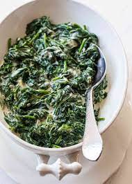

Creamed Spinach

Description:
This recipe is a great way to use up tiny amounts of extra veggies as a compliment to the spinach. See ingredient list for suggestions.
Ingredients
- frozen spinach
- cream cheese
- salt and pepper
- optional veggies: diced or dehydrated peppers, diced or dehyrated onion, shallots, green onions, riced cauliflower, turnips, radishes
- optional herbs: parsley, tarragon, dill
Steps
- Heat spinach in a saucepan on low to defrost and remove some moisture. Add diced or dehyrdated veggies. If adding fresh, raw root vegetables, saute them first, then add the frozen spinach. If adding dehyrated onions or peppers, heat everything all together.
- Add cream cheese, combine on low.
- Season with salt and pepper.
Notes
- Heat your spinach gently; too much heat will overcook it and it won't be as nutritious!